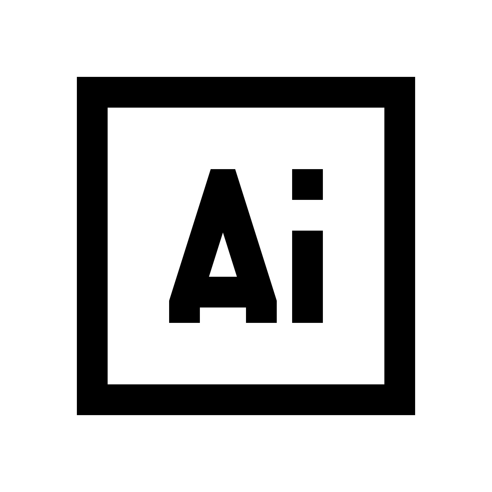
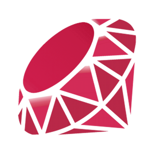
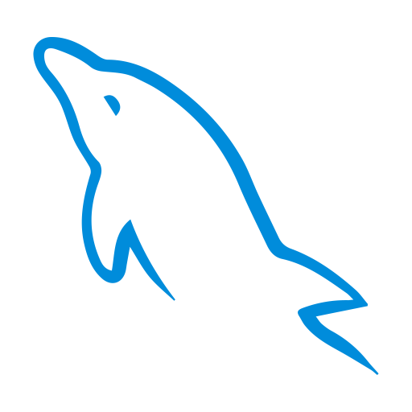

Web Developer & Online Merchandiser
I am a dedicated web developer and also a culture and fashion enthusiest. I am also intereted in the way that digital communities are built through online interaction and engagment.
As a recent graduated from the intensive web development immersive program at General Assembly and having trained at Per Scholas Code Bridge program, I have developed strong analytical and probelm solving skills as it pertains to coding.
If you are seeking a candidate who will be dedicated to your brands success, who understands your customers needs, and who can help you build a strong online brand, please visit the contact me page and send me a message.
Mission
To build global awareness around diversity, so that difference can be embraced and celebrated through creative, visually appealing and interactive websites.
Vision
An online enviornment that speaks to all so that everyone can feel that they have a represented identity and a platform where they can connect with others.
Skill Set
-
CSS
- 
Illustrator

Photoshop

SASS
Design
-
HTML

Javascript

Python
- 
Ruby
Code

Firebase

Mongodb
- 
MySQL

PSQL
DB's